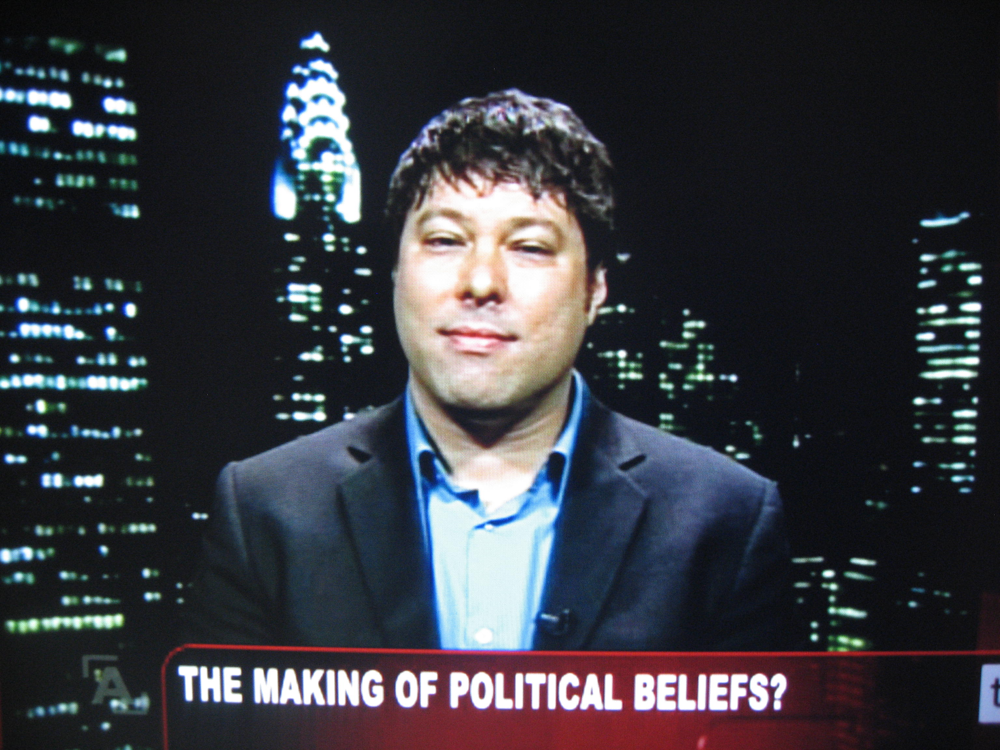

Principal Investigators
- Richard Bonneau Bio
-

bonneau@nyu.edu
Personal Site
Google Scholar -
Biology and Computer Science
My laboratory is focused on two areas in computational and systems biology: 1) Predicting and designing protein and peptidomimetic structure and 2) Learning dynamic network models automatically from functional genomics data using scalable methods.
In both research areas I have played key roles in achieving critical field-wide milestones. In the area of structure prediction I was one of the early authors on the Rosetta code, which was one of the first codes to demonstrate accurate and comprehensive ability to predict protein structure in the absence of detectable sequence homology to proteins with known structures. My lab continues to be a core contributor to the Rosetta research community, participating in the recent refactoring of the code and adding several new functionalities.
My lab has also made key contributions to the area of genomics data analysis in a systems-biology context. We focus on developing new methods for network inference that simultaneously learn dynamics and topology from data (the Inferelator), and methods that learn condition-dependent co-regulated gene groups from integrations of different genomics data- types (e.g. transcriptomic, proteomic, etc.) using approaches we have developed (cMonkey and multi-species-cMonkey integrative biclustering). In the DREAM3 and DREAM4 blind assessment of network inference methods we were top performers in the network inference category, and are currently contributing to a joint paper resulting from DREAM5 (the most current assessment of network inference methods).
- John Jost Bio
-

john.jost@nyu.edu
Personal Site
Google Scholar -
Psychology and Politics
John T. Jost is Professor of Psychology and Politics and Co-Director of the Center for Social and Political Behavior at New York University. His research, which addresses stereotyping, prejudice, political ideology, and system justification theory, has been funded by the National Science Foundation and has appeared in top scientific journals and received national and international media attention. He has published over 120 journal articles and book chapters and four co-edited book volumes, including Social and Psychological Bases of Ideology and System Justification (Oxford, 2009). He has received numerous honors and awards, including the Gordon Allport Intergroup Relations Prize, Erik Erikson Award for Early Career Research Achievement in Political Psychology, International Society for Self and Identity Early Career Award, Society for Personality and Social Psychology Theoretical Innovation Prize, Society of Experimental Social Psychology Career Trajectory Award, and the Morton Deutsch Award for Distinguished Scholarly and Practical Contributions to Social Justice. He has served on several editorial boards and executive committees of professional societies and is currently editor of the Oxford University Press book series on Political Psychology. He is a Fellow of the Society of Experimental Social Psychology and the Association of Psychological Science.
- Jonathan Nagler Bio
-

jonathan.nagler@nyu.edu
Personal Site
Google Scholar -
Politics
I am a Professor of Politics, as well as the Director of the Politics Data Center. I am currently working on a book on voter turnout in the United States from 1972 to 2008, as well as projects on the effect of campaign advertising on turnout, and other aspects of elections and voting behavior.
- Joshua A. Tucker Bio
-
joshua.tucker@nyu.edu

Personal Site Google Scholar -
Politics and Russian and Slavic Studies
I am a Professor of Politics at New York University with an affiliate appointment in the Department of Russian and Slavic Studies and New York University-Abu Dhabi; I spent last spring as a Visiting Professor at the Juan March Foundation’s Center for Advanced Study in the Social Sciences. My major field is comparative politics with an emphasis on mass politics, including elections and voting, the development of partisan attachment, public opinion formation, and, political protest. My primary regional specialization is in Eastern Europe and the former Soviet Union.
My first book, Regional Economic Voting: Russia, Poland, Hungary, Slovakia, and the Czech Republic, 1990-1999, was published by Cambridge University Press in 2006 and is available for purchase in paperback, hardcover, and on the Kindle(!). It examines the effect of economic conditions on election results in twenty national elections that took place between 1990-99 in Russia, Poland, Hungary, Slovakia, and the Czech Republic. Click here for an abstract and more information or here for reviews in Perspectives on Politics; Comparative Political Studies; The Journal of Politics, Foreign Affairs; Slavic Review; The Russia Review; and the Canadian Journal of Politics. Readers of this book may also be interested in a recent publication of mine in Electoral Studies that revisits a number of the book’s arguments using micro-level data from three Polish elections.
I am currently working on two book-length projects. The first examines the individual and institutional factors that affect the development of partisanship, and will eventually culminate in a book manuscript tentatively titled The Nature and Origins of Party Identification. Journal articles from this project can be found here, here, and here; additional working papers are available here and here.
My second book-length project explores the effects of communist (and pre-communist) era legacies on political values and behavior in post-communist countries. The manuscript that will result from this project is tentatively titled Communism’s Shadow: Historical Legacies, and Political Values and Behavior; interested readers can download a first draft of Chapters 1-3 and 6.. The first published article from the project is available here.
I am also working on a variety of other projects. One project focuses on the mass politics aspects of European Union (EU) accession in Poland (see here, and here), which builds in part on other work on public opinion formation towards EU membership in post-communist countries generally (see here and here). Other recent work examines political representation, turnout in post-communist elections, the causes and effects of the Colored Revolutions, measuring societal cross pressures, new approaches to studying electoral volatility (see here and here) and prospective economic voting. In the past, I have also published articles on the phenomenon of strategic voting in sequential elections, why citizens vote for ex-authoritarian leaders, statistical models for the analysis of multi-party elections, non-response bias in survey measurement of attitudes towards economic reform in Russia, and, somewhat off the path of my normal research interests, information markets. I am also the author of an Annual Review of Political Science survey of the first decade of literature on elections and voting in post-communist countries. Papers and abstracts from all projects can be found on my publications and working papers page.
In 2006, I became the first scholar of post-communist politics to be awarded the Emerging Scholar Award for the top scholar in the field of Elections, Public Opinion, and Voting Behavior within 10 years of receiving the Ph.D.
In 2009, I was added as a co-author of The Monkey Cage, a politics and policy blog written by political scientists. I also contribute regularly to Politico’s Arena and write occasionally for The New Republic.